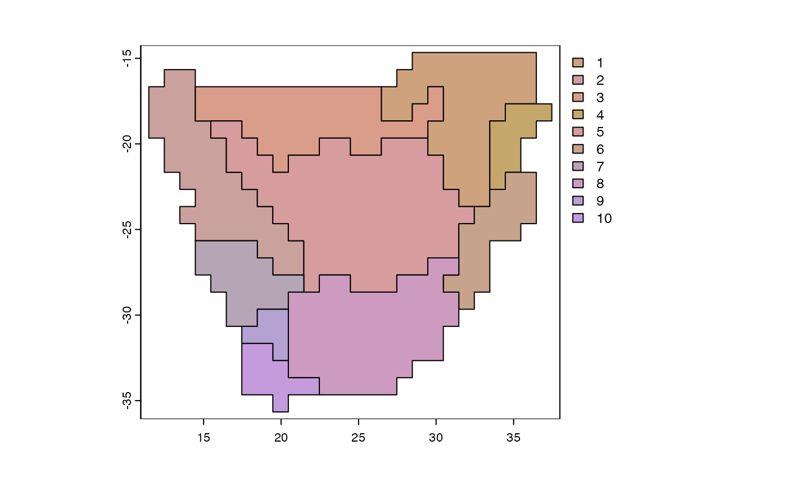

An introduction to the phyloregion package
Barnabas H. Daru, Piyal Karunarathne & Klaus Schliep
January 27, 2024
Source:vignettes/phyloregion-intro.Rmd
phyloregion-intro.Rmd1. Installation
phyloregion is available from the Comprehensive R
Archive Network, so you can use the following line of code to
install and run it:
install.packages("phyloregion")Alternatively, you can install the development version of
phyloregion hosted on GitHub. To do this, you will need to
install the devtools package. In R, type:
if (!requireNamespace("remotes", quietly = TRUE))
install.packages("remotes")
remotes::install_github("darunabas/phyloregion")When installed, load the package in R:
2. Overview and general workflow of phyloregion
The workflow of the phyloregion package demonstrates
steps from preparation of different types of data to visualizing the
results of biogeographical regionalization, together with tips on
selecting the optimal method for achieving the best output, depending on
the types of data used and research questions.
3. Input data
Phylogenies
In R, phylogenetic relationships among species / taxa are often
represented as a phylo object implemented in the ape
package(Paradis and Schliep 2018).
Phylogenies (often in the Newick or Nexus formats) can be imported into
R with the read.tree or read.nexus functions
of the ape package(Paradis and
Schliep 2018).
## terra 1.7.55##
## Attaching package: 'terra'## The following objects are masked from 'package:ape':
##
## rotate, trans, zoom
data(africa)
sparse_comm <- africa$comm
tree <- africa$phylo
tree <- keep.tip(tree, intersect(tree$tip.label, colnames(sparse_comm)))
par(mar=c(2,2,2,2))
plot(tree, show.tip.label=FALSE)![__Figure 2.__ Phylogenetic tree of the woody plants of southern Africa inferred from DNA barcodes using a maximum likelihood approach and transforming branch lengths to millions of years ago by enforcing a relaxed molecular clock and multiple calibrations [@Daru2015ddi].](phyloregion-intro_files/figure-html/unnamed-chunk-2-1.png)
Figure 2. Phylogenetic tree of the woody plants of southern Africa inferred from DNA barcodes using a maximum likelihood approach and transforming branch lengths to millions of years ago by enforcing a relaxed molecular clock and multiple calibrations (Barnabas H. Daru, Bank, and Davies 2015).
Distribution data input
The phyloregion package has functions for manipulating
three kinds of distribution data: point records, vector polygons and
raster layers. An overview can be easily obtained with the functions
points2comm, polys2comm and
rast2comm for point records, polygons, or raster layers,
respectively. Depending on the data source, all three functions
ultimately provide convenient interfaces to convert the distribution
data to a community matrix at varying spatial grains and extents for
downstream analyses.
We will play around with these functions in turn.
Function points2comm
Here, we will generate random points in geographic space, similar to occurrence data obtained from museum records, GBIF, iDigBio, or CIESIN which typically have columns of geographic coordinates for each observation.
s <- vect(system.file("ex/nigeria.json", package="phyloregion"))
set.seed(1)
m <- as.data.frame(spatSample(s, 1000, method = "random"),
geom = "XY")[-1]
names(m) <- c("lon", "lat")
species <- paste0("sp", sample(1:100))
m$taxon <- sample(species, size = nrow(m), replace = TRUE)
pt <- points2comm(dat = m, res = 0.5, lon = "lon", lat = "lat",
species = "taxon") # This generates a list of two objects
head(pt[[1]][1:5, 1:5])## 5 x 5 sparse Matrix of class "dgCMatrix"
## sp1 sp10 sp100 sp11 sp12
## v100 . . . . .
## v101 . 1 . . .
## v102 . . . . .
## v103 . . . . .
## v105 . . . . .
Function polys2comm
This function converts polygons to a community matrix at varying
spatial grains and extents for downstream analyses. Polygons can be
derived from the IUCN Redlist spatial database (https:
//www.iucnredlist.org/resources/spatial-data-download), published
monographs or field guides validated by taxonomic experts. To illustrate
this function, we will use the function random_species to
generate random polygons for five random species over the landscape of
Nigeria as follows:
s <- vect(system.file("ex/nigeria.json", package="phyloregion"))
sp <- random_species(100, species=5, pol=s)
pol <- polys2comm(dat = sp)
head(pol[[1]][1:5, 1:5])## 5 x 5 sparse Matrix of class "dgCMatrix"
## species1 species2 species3 species4 species5
## v10 . . . 1 .
## v100 . . . 1 1
## v1000 . . . 1 1
## v1001 . . . 1 1
## v1002 . . . 1 1
Function rast2comm
This third function, converts raster layers (often derived from species distribution modeling, such as aquamaps(Kaschner et al. 2008)) to a community matrix.
fdir <- system.file("NGAplants", package="phyloregion")
files <- file.path(fdir, dir(fdir))
ras <- rast2comm(files)
head(ras[[1]][1:5, 1:5])## 5 x 5 sparse Matrix of class "dgCMatrix"
## Chytranthus_gilletii Commelina_ramulosa Cymbopogon_caesius
## v100 . . .
## v101 . . .
## v102 . . .
## v103 . . .
## v104 . . .
## Dalechampia_ipomoeifolia Grewia_barombiensis
## v100 1 .
## v101 1 .
## v102 1 .
## v103 1 .
## v104 1 .The object ras above also returns two objects: a
community data frame and a vector of grid cells with the numbers of
species per cell and can be plotted as a heatmap using plot
function as follows:
s <- vect(system.file("ex/SR_Naija.json", package="phyloregion"))
par(mar=rep(0,4))
plot(s, "SR", border=NA, type = "continuous",
col = hcl.colors(20, palette = "Blue-Red 3", rev=FALSE))
Figure 3. Species richness of plants in Nigeria across
equal area grid cells. This is to demonstrate how the function
plot works.
Community data
Community data are commonly stored in a matrix with the sites as rows and species / operational taxonomic units (OTUs) as columns. The elements of the matrix are numeric values indicating the abundance/observations or presence/absence (0/1) of OTUs in different sites. In practice, such a matrix can contain many zero values because species are known to generally have unimodal distributions along environmental gradients (Ter Braak and Prentice 2004), and storing and analyzing every single element of that matrix can be computationally challenging and expensive.
phyloregion differs from other R packages (e.g. vegan
(Oksanen et al. 2019), picante (Kembel et al. 2010) or betapart(Baselga and Orme 2012)) in that the data are
not stored in a (dense) matrix or data.frame
but as a sparse matrix making use of the infrastructure provided by the
Matrix package (Bates and Maechler 2019).
A sparse matrix is a matrix with a high proportion of zero entries(Duff 1977), of which only the non-zero entries
are stored and used for downstream analysis.
A sparse matrix representation has two advantages. First the
community matrix can be stored in a much memory efficient manner,
allowing analysis of larger datasets. Second, for very large datasets
spanning thousands of taxa and spatial scales, computations with a
sparse matrix are often much faster.
The phyloregion package contains functions to conveniently
change between data formats.
library(Matrix)
data(africa)
sparse_comm <- africa$comm
dense_comm <- as.matrix(sparse_comm)
object.size(dense_comm)## 4216952 bytes
object.size(sparse_comm)## 885952 bytesHere, the data set in the dense matrix representation consumes roughly five times more memory than the sparse representation.
4. Analysis
Alpha diversity
We demonstrate the utility of phyloregion in mapping
standard conservation metrics of species richness, weighted endemism
(weighted_endemism) and threat (map_traits) as
well as fast computations of phylodiversity measures such as
phylogenetic diversity (PD), phylogenetic endemism
(phylo_endemism), and evolutionary distinctiveness and
global endangerment (EDGE). The major advantage of these
functions compared to available tools is the ability to utilize sparse
matrix that speeds up the analyses without exhausting computer memories,
making it ideal for handling any data from small local scales to large
regional and global scales.
Function weighted_endemism
Weighted endemism is species richness inversely weighted by species ranges(Crisp et al. 2001),(Laffan and Crisp 2003),(Barnabas H. Daru et al. 2020).
library(terra)
data(africa)
p <- vect(system.file("ex/sa.json", package = "phyloregion"))
Endm <- weighted_endemism(africa$comm)
m <- merge(p, data.frame(grids=names(Endm), WE=Endm), by="grids")
m <- m[!is.na(m$WE),]
par(mar=rep(0,4))
plot(m, "WE", col = hcl.colors(20, "Blue-Red 3"),
type="continuous", border = NA)Figure 4. Geographic distributions of weighted endemism for woody plants of southern Africa.
Function PD – phylogenetic diversity
Phylogenetic diversity (PD) represents the length of
evolutionary pathways that connects a given set of taxa on a rooted
phylogenetic tree (Faith 1992). This
metric is often characterised in units of time (millions of years, for
dated phylogenies). We will map PD for plants of southern Africa.
data(africa)
comm <- africa$comm
tree <- africa$phylo
poly <- vect(system.file("ex/sa.json", package = "phyloregion"))
mypd <- PD(comm, tree)
head(mypd)## v3635 v3636 v3637 v3638 v3639 v3640
## 4226.216 5372.009 4377.735 3783.992 3260.111 1032.685
M <- merge(poly, data.frame(grids=names(mypd), pd=mypd), by="grids")
M <- M[!is.na(M$pd),]
head(M)## grids pd
## 1 v3635 4226.216
## 2 v3636 5372.009
## 3 v3637 4377.735
## 4 v3638 3783.992
## 5 v3639 3260.111
## 6 v3640 1032.685
par(mar=rep(0,4))
plot(M, "pd", border=NA, type="continuous",
col = hcl.colors(20, "Blue-Red 3"))
Figure 5. Geographic distributions of phylogenetic diversity for woody plants of southern Africa.
Function phylo_endemism – phylogenetic endemism
Phylogenetic endemism is not influenced by variations in taxonomic opinion because it measures endemism based on the relatedness of species before weighting it by their range sizes(Rosauer et al. 2009),(Barnabas H. Daru et al. 2020).
library(terra)
data(africa)
comm <- africa$comm
tree <- africa$phylo
poly <- vect(system.file("ex/sa.json", package = "phyloregion"))
pe <- phylo_endemism(comm, tree)
head(pe)## v3635 v3636 v3637 v3638 v3639 v3640
## 32.536530 45.262625 35.004944 27.603721 23.183947 6.439589
mx <- merge(poly, data.frame(grids=names(pe), pe=pe), by="grids")
mx <- mx[!is.na(mx$pe),]
head(mx)## grids pe
## 1 v3635 32.536530
## 2 v3636 45.262625
## 3 v3637 35.004944
## 4 v3638 27.603721
## 5 v3639 23.183947
## 6 v3640 6.439589
par(mar=rep(0,4))
plot(mx, "pe", border=NA, type="continuous",
col = hcl.colors(n=20, palette = "Blue-Red 3", rev=FALSE))
Figure 6. Geographic distributions of phylogenetic endemism for woody plants of southern Africa.
Function EDGE – Evolutionary Distinctiveness and Global
Endangerment
This function calculates EDGE by combining evolutionary distinctiveness (ED; i.e., phylogenetic isolation of a species) with global endangerment (GE) status as defined by the International Union for Conservation of Nature (IUCN).
data(africa)
comm <- africa$comm
threat <- africa$IUCN
tree <- africa$phylo
poly <- vect(system.file("ex/sa.json", package = "phyloregion"))
x <- EDGE(threat, tree, Redlist = "IUCN", species="Species")
head(x)## Abutilon_angulatum_OM1934 Abutilon_sonneratianum_LTM034
## 2.903551 2.903551
## Acalypha_glabrata_glabrata_OM441 Acalypha_glabrata_pilosa_OM1979
## 2.480505 2.480505
## Acalypha_sonderiana_OM2163 Acokanthera_oblongifolia_OM2240
## 2.914481 2.211561
y <- map_trait(comm, x, FUN = sd, pol=poly)
par(mar=rep(0,4))
plot(y, "traits", border=NA, type="continuous",
col = hcl.colors(n=20, palette = "Blue-Red 3", rev=FALSE))
Figure 7. Geographic distributions of evolutionary distinctiveness and global endangerment for woody plants of southern Africa.
Analysis of beta diversity (phylogenetic and non-phylogenetic)
The three commonly used methods for quantifying -diversity, the
variation in species composition among sites, – Simpson, Sorenson and
Jaccard(Laffan et al. 2016). The
phyloregion’s functions beta_diss and
phylobeta compute efficiently pairwise dissimilarities
matrices for large sparse community matrices and phylogenetic trees for
taxonomic and phylogenetic turnover, respectively. The results are
stored as distance objects for subsequent analyses.
Phylogenetic beta diversity
phyloregion offers a fast means of computing
phylogenetic beta diversity, the turnover of branch lengths among sites,
making use of and improving on the infrastructure provided by the
betapart package(Baselga and Orme
2012) allowing a sparse community matrix as input.
data(africa)
p <- vect(system.file("ex/sa.json", package = "phyloregion"))
sparse_comm <- africa$comm
tree <- africa$phylo
tree <- keep.tip(tree, intersect(tree$tip.label, colnames(sparse_comm)))
pb <- phylobeta(sparse_comm, tree)
y <- phyloregion(pb[[1]], pol=p)
plot_NMDS(y, cex=3)## Warning in mixcolor(seq(0, 199)/199, polarLUV(70, 50, 30), polarLUV(70, :
## convex combination of colors in polar coordinates (polarLUV) may not be
## appropriate## Warning in mixcolor(seq(0, 199)/199, polarLUV(70, 50, 300), polarLUV(70, :
## convex combination of colors in polar coordinates (polarLUV) may not be
## appropriate
text_NMDS(y)

Session Information
## R version 4.3.2 (2023-10-31)
## Platform: aarch64-apple-darwin20 (64-bit)
## Running under: macOS Sonoma 14.3
##
## Matrix products: default
## BLAS: /Library/Frameworks/R.framework/Versions/4.3-arm64/Resources/lib/libRblas.0.dylib
## LAPACK: /Library/Frameworks/R.framework/Versions/4.3-arm64/Resources/lib/libRlapack.dylib; LAPACK version 3.11.0
##
## locale:
## [1] en_US.UTF-8/en_US.UTF-8/en_US.UTF-8/C/en_US.UTF-8/en_US.UTF-8
##
## time zone: America/Los_Angeles
## tzcode source: internal
##
## attached base packages:
## [1] stats graphics grDevices utils datasets methods base
##
## other attached packages:
## [1] terra_1.7-55 Matrix_1.6-1.1 ape_5.7-1 phyloregion_1.0.9
##
## loaded via a namespace (and not attached):
## [1] fastmatch_1.1-4 xfun_0.41 bslib_0.6.1 clustMixType_0.3-9
## [5] lattice_0.21-9 quadprog_1.5-8 vctrs_0.6.5 tools_4.3.2
## [9] doSNOW_1.0.20 generics_0.1.3 parallel_4.3.2 tibble_3.2.1
## [13] fansi_1.0.6 cluster_2.1.4 highr_0.10 pkgconfig_2.0.3
## [17] RColorBrewer_1.1-3 desc_1.4.2 lifecycle_1.0.4 compiler_4.3.2
## [21] stringr_1.5.1 predicts_0.1-11 textshaping_0.3.7 minpack.lm_1.2-4
## [25] smoothr_1.0.1 codetools_0.2-19 permute_0.9-7 htmltools_0.5.7
## [29] snow_0.4-4 sass_0.4.8 yaml_2.3.7 pillar_1.9.0
## [33] pkgdown_2.0.7 jquerylib_0.1.4 MASS_7.3-60 cachem_1.0.8
## [37] vegan_2.6-4 iterators_1.0.14 abind_1.4-5 foreach_1.5.2
## [41] maptpx_1.9-7 nlme_3.1-163 picante_1.8.2 phangorn_2.11.1
## [45] digest_0.6.33 stringi_1.8.2 slam_0.1-50 purrr_1.0.2
## [49] splines_4.3.2 magic_1.6-1 rprojroot_2.0.4 fastmap_1.1.1
## [53] grid_4.3.2 colorspace_2.1-0 cli_3.6.1 magrittr_2.0.3
## [57] utf8_1.2.4 rmarkdown_2.25 igraph_1.5.1 ragg_1.2.6
## [61] memoise_2.0.1 evaluate_0.23 knitr_1.45 rcdd_1.5-2
## [65] geometry_0.4.7 mgcv_1.9-0 itertools_0.1-3 rlang_1.1.2
## [69] Rcpp_1.0.11 glue_1.6.2 betapart_1.6 rstudioapi_0.15.0
## [73] jsonlite_1.8.8 R6_2.5.1 systemfonts_1.0.5 fs_1.6.3